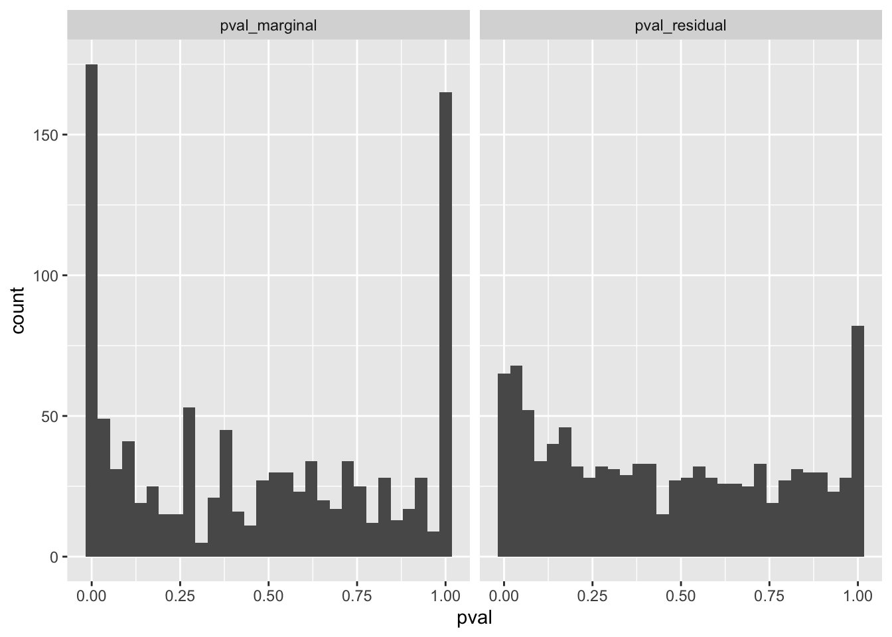
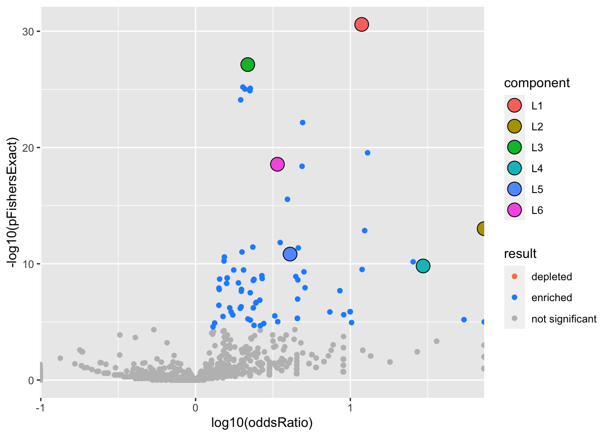
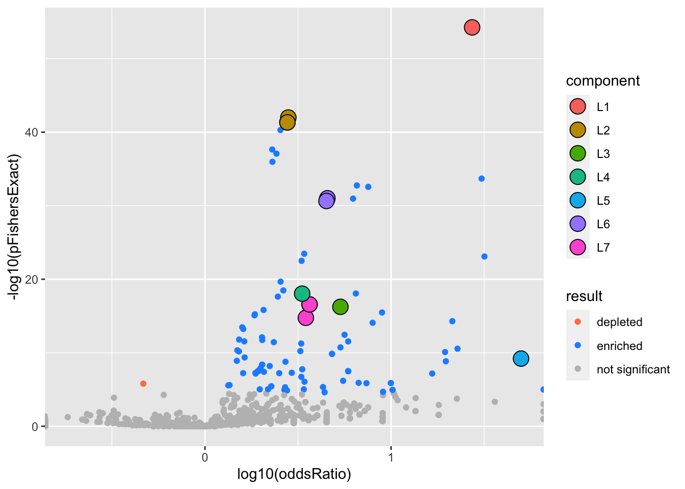
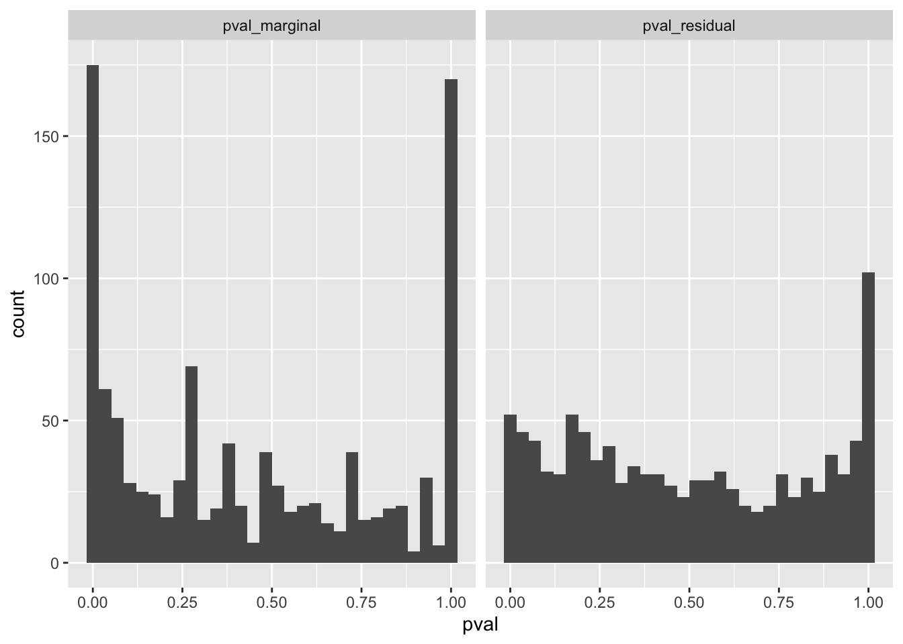
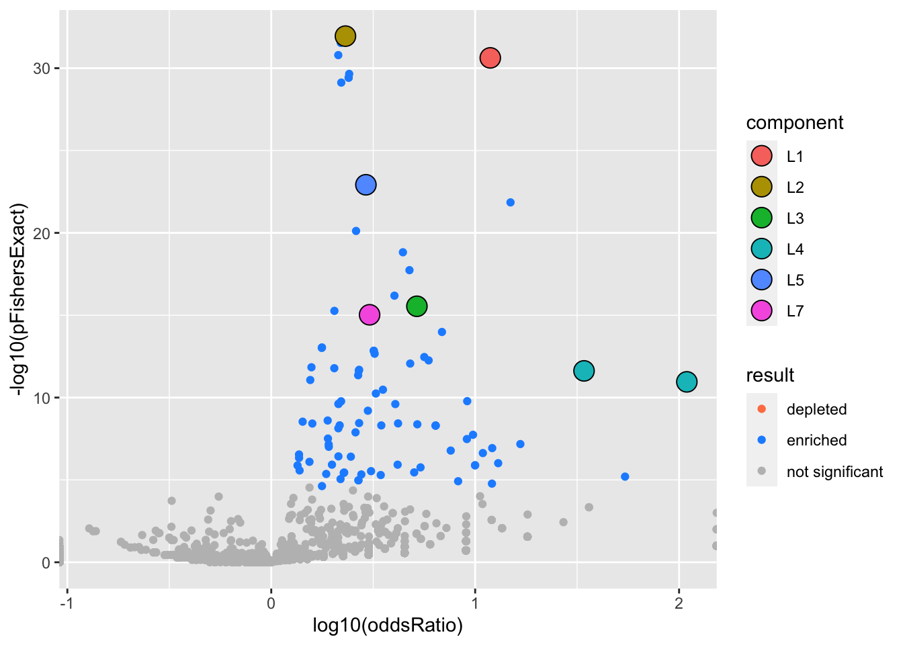

Single Cell PBMC Differential Expression
karltayeb
2022-04-11
Last updated: 2022-05-31
Checks: 7 0
Knit directory: logistic-susie-gsea/
This reproducible R Markdown analysis was created with workflowr (version 1.7.0). The Checks tab describes the reproducibility checks that were applied when the results were created. The Past versions tab lists the development history.
Great! Since the R Markdown file has been committed to the Git repository, you know the exact version of the code that produced these results.
Great job! The global environment was empty. Objects defined in the global environment can affect the analysis in your R Markdown file in unknown ways. For reproduciblity it’s best to always run the code in an empty environment.
The command set.seed(20220105) was run prior to running the code in the R Markdown file. Setting a seed ensures that any results that rely on randomness, e.g. subsampling or permutations, are reproducible.
Great job! Recording the operating system, R version, and package versions is critical for reproducibility.
Nice! There were no cached chunks for this analysis, so you can be confident that you successfully produced the results during this run.
Great job! Using relative paths to the files within your workflowr project makes it easier to run your code on other machines.
Great! You are using Git for version control. Tracking code development and connecting the code version to the results is critical for reproducibility.
The results in this page were generated with repository version 89140a3. See the Past versions tab to see a history of the changes made to the R Markdown and HTML files.
Note that you need to be careful to ensure that all relevant files for the analysis have been committed to Git prior to generating the results (you can use wflow_publish or wflow_git_commit). workflowr only checks the R Markdown file, but you know if there are other scripts or data files that it depends on. Below is the status of the Git repository when the results were generated:
Ignored files:
Ignored: .DS_Store
Ignored: .RData
Ignored: .Rhistory
Ignored: .Rproj.user/
Ignored: _targets.R
Ignored: _targets.html
Ignored: _targets.md
Ignored: _targets/objects/
Ignored: _targets/user/
Ignored: _targets/workspaces/
Ignored: _targets_r/
Ignored: cache/
Ignored: data/adipose_2yr_topsnp.txt
Ignored: data/anthony/
Ignored: data/de-droplet/
Ignored: data/deng/
Ignored: data/fetal_reference_cellid_gene_sets.RData
Ignored: data/human_chimp_eb/
Ignored: data/pbmc-purified/
Ignored: data/wenhe_baboon_diet/
Ignored: library/
Ignored: presentations/
Ignored: renv/
Ignored: staging/
Untracked files:
Untracked: .ipynb_checkpoints/
Untracked: Project_1652928411/
Untracked: Project_1653228324/
Untracked: Project_1653228355/
Untracked: _targets/meta/
Untracked: additive.l5.gonr.aggregate.scores
Untracked: analysis/alpha_ash_v_point_normal.Rmd
Untracked: analysis/de_droplet_noshrink.Rmd
Untracked: analysis/de_droplet_noshrink_logistic_susie.Rmd
Untracked: analysis/example_anthony.Rmd
Untracked: analysis/fetal_reference_cellid_gsea.Rmd
Untracked: analysis/fixed_intercept.Rmd
Untracked: analysis/gsea_made_simple.Rmd
Untracked: analysis/iDEA_examples.Rmd
Untracked: analysis/latent_gene_list.Rmd
Untracked: analysis/linear_method_failure_modes.Rmd
Untracked: analysis/linear_regression_failure_regime.Rmd
Untracked: analysis/linear_v_logistic_pbmc.Rmd
Untracked: analysis/logistic_susie_veb_boost_vs_vb.Rmd
Untracked: analysis/logistic_susie_vis.Rmd
Untracked: analysis/logistic_variational_bound.Rmd
Untracked: analysis/logsitic_susie_template.Rmd
Untracked: analysis/pcb_scratch.Rmd
Untracked: analysis/references.bib
Untracked: analysis/roadmap.Rmd
Untracked: analysis/simulations.Rmd
Untracked: analysis/simulations_l1.Rmd
Untracked: analysis/tccm_vs_logistic_susie.Rmd
Untracked: analysis/template.Rmd
Untracked: analysis/test.Rmd
Untracked: build_site.R
Untracked: code/html_tables.R
Untracked: code/latent_logistic_susie.R
Untracked: code/logistic_susie_data_driver.R
Untracked: code/marginal_sumstat_gsea_collapsed.R
Untracked: code/point_normal.R
Untracked: code/sumstat_gsea.py
Untracked: code/susie_gsea_queries.R
Untracked: docs.zip
Untracked: export/
Untracked: l1.sim.aggregate.scores
Untracked: references.bib
Unstaged changes:
Modified: code/target_run_enrichment.R
Note that any generated files, e.g. HTML, png, CSS, etc., are not included in this status report because it is ok for generated content to have uncommitted changes.
These are the previous versions of the repository in which changes were made to the R Markdown (analysis/example_pbmc.Rmd) and HTML (docs/example_pbmc.html) files. If you’ve configured a remote Git repository (see ?wflow_git_remote), click on the hyperlinks in the table below to view the files as they were in that past version.
| File | Version | Author | Date | Message |
|---|---|---|---|---|
| Rmd | 780da31 | karltayeb | 2022-05-22 | im |
| html | 780da31 | karltayeb | 2022-05-22 | im |
| html | dc6160c | Karl Tayeb | 2022-05-17 | Build site. |
| Rmd | 711d052 | Karl Tayeb | 2022-05-17 | wflow_publish(“analysis/example_pbmc.Rmd”) |
| html | 91d68fc | Karl Tayeb | 2022-05-17 | Build site. |
| Rmd | 76aceb2 | Karl Tayeb | 2022-05-17 | wflow_publish(“analysis/example_pbmc.Rmd”) |
| Rmd | ed4b202 | Karl Tayeb | 2022-05-17 | Merge branch ‘master’ of https://github.com/karltayeb/logistic-susie-gsea |
| html | ed4b202 | Karl Tayeb | 2022-05-17 | Merge branch ‘master’ of https://github.com/karltayeb/logistic-susie-gsea |
| html | 69539d5 | Karl Tayeb | 2022-05-17 | c2p |
| Rmd | c3c4bd3 | Karl Tayeb | 2022-05-17 | publish |
| Rmd | a667a3b | Karl Tayeb | 2022-05-17 | wflow_publish(“analysis/example_pbmc.Rmd”) |
| Rmd | 7185642 | Karl Tayeb | 2022-05-17 | wflow_publish(“analysis/example_pbmc.Rmd”) |
| html | 4ad7365 | karltayeb | 2022-05-05 | Build site. |
| Rmd | 06e6b26 | karltayeb | 2022-05-05 | wflow_publish(“analysis/example_pbmc.Rmd”) |
Introduction
PBMC data from Zheng et. al 2017.
library(gseasusie)
library(ggplot2)
library(tidyverse)
library(targets)
tar_load(sc_pbmc_deseq_enrichment_summary)
results <- sc_pbmc_deseq_enrichment_summaryEnrichment results
color_sign <- gseasusie:::color_sign
interactive_table2 = function(res){
dt <- res %>%
dplyr::filter(overlap > 0) %>%
dplyr::mutate(
logOddsRatio = log(oddsRatio),
nlog10pFishersExact = -log10(pFishersExact)
) %>%
dplyr::arrange(dplyr::desc(nlog10pFishersExact)) %>%
dplyr::mutate(
fisherRank = dplyr::row_number(),
in_active_cs = dplyr::if_else(is.na(in_cs), FALSE, in_cs & active_cs)) %>%
dplyr::select(geneSet, description, in_active_cs, beta, pip, overlap, geneSetSize, logOddsRatio, nlog10pFishersExact, component, fisherRank) %>%
dplyr::mutate(dplyr::across(!where(is.numeric), as.factor))
dt %>%
reactable::reactable(
filterable=TRUE,
minRows=20,
columns = list(
pip = reactable::colDef(format = reactable::colFormat(digits = 3)),
logOddsRatio = reactable::colDef(style= function(value){color_sign(value)},
format = reactable::colFormat(digits = 3)),
beta = reactable::colDef(style= function(value){color_sign(value)},
format = reactable::colFormat(digits = 3)),
nlog10pFishersExact = reactable::colDef(format = reactable::colFormat(digits = 3))
),
rowStyle = function(index){
if(dt$in_active_cs[index] == TRUE){
list(background = "#e5f5e0")
}
},
defaultSorted = list(nlog10pFishersExact='desc')
)
}
#' @export
residual_enrichment_histogram2 = function(res){
res %>%
dplyr::select(geneSet, pval_marginal, pval_residual) %>%
tidyr::pivot_longer(dplyr::starts_with('pval'), values_to = 'pval') %>%
ggplot2::ggplot(aes(x=pval)) +
ggplot2::geom_histogram() + ggplot2::facet_wrap(vars(name))
}
pack_group <- gseasusie:::pack_group
static_table = function(res){
require(kableExtra)
tbl_filtered <-
res %>%
arrange(pFishersExact) %>%
mutate(fisherRank = row_number()) %>%
filter(in_cs, active_cs) %>%
group_by(component) %>%
arrange(component, desc(alpha)) %>%
dplyr::ungroup() %>%
dplyr::mutate(logOddsRatio = log10(oddsRatio))
tbl_filtered %>%
dplyr::select(
component, geneSet, description, geneSetSize, overlap,
logOddsRatio, conditional_beta, conditional_beta_se,
alpha, pip, pFishersExact, fisherRank) %>%
dplyr::mutate_if(is.numeric, funs(as.character(signif(., 3)))) %>%
pack_group %>%
column_spec(c(4), color=ifelse(tbl_filtered$beta > 0, 'green', 'red')) %>%
kableExtra::kable_styling()
}results <- results %>% arrange(experiment, ptop, db)
experiments <- results$experiment %>% unique()
for(this_experiment in experiments){
cat('\n')
cat('##', this_experiment)
sub_res <- results %>% filter(experiment == this_experiment)
N <- dim(sub_res)[1]
for (i in 1:N){
this_db <- sub_res$db[[i]]
this_ptop <- sub_res$ptop[[i]]
res <- sub_res$enrichment_summary[[i]]
cat("\n")
cat("### prop genes = ", this_ptop, ', db = ', this_db, "\n") # Create second level headings with the names.
volcano <- res %>% gseasusie::enrichment_volcano2()
hist <- res %>% filter(overlap > 0) %>% residual_enrichment_histogram2()
print(volcano)
print(hist)
cat("\n\n")
print(static_table(res))
}
}CD14+ Monocyte
prop genes = 0.1 , db = gocc


| geneSet | description | geneSetSize | overlap | logOddsRatio | conditional_beta | conditional_beta_se | alpha | pip | pFishersExact | fisherRank |
|---|---|---|---|---|---|---|---|---|---|---|
| L1 | ||||||||||
| GO:0022626 | cytosolic ribosome | 104 | 75 | 1.39 | 3.22 | 0.205 | 1 | 1 | 3.49e-52 | 1 |
| L2 | ||||||||||
| GO:0031982 | vesicle | 2880 | 503 | 0.4 | 0.69 | 0.048 | 1 | 1 | 5.71e-47 | 2 |
| L3 | ||||||||||
| GO:0098800 | inner mitochondrial membrane protein complex | 137 | 53 | 0.77 | 2.04 | 0.174 | 1 | 1 | 3.03e-19 | 23 |
| L4 | ||||||||||
| GO:0042101 | T cell receptor complex | 17 | 13 | 1.47 | 3.33 | 0.513 | 1 | 1 | 1.52e-10 | 59 |
| L5 | ||||||||||
| GO:0030141 | secretory granule | 658 | 167 | 0.529 | 0.751 | 0.0843 | 0.949 | 0.949 | 9.98e-32 | 13 |
| GO:0099503 | secretory vesicle | 754 | 182 | 0.502 | 0.685 | 0.0798 | 0.0515 | 0.0554 | 1.43e-31 | 14 |
| L6 | ||||||||||
| GO:0042611 | MHC protein complex | 19 | 14 | 1.41 | 2.89 | 0.483 | 0.761 | 0.763 | 6.67e-11 | 57 |
| GO:0042613 | MHC class II protein complex | 13 | 11 | 1.7 | 3.32 | 0.578 | 0.237 | 0.242 | 6.17e-10 | 62 |
CD19+ B
prop genes = 0.1 , db = gocc

| geneSet | description | geneSetSize | overlap | logOddsRatio | conditional_beta | conditional_beta_se | alpha | pip | pFishersExact | fisherRank |
|---|---|---|---|---|---|---|---|---|---|---|
| L1 | ||||||||||
| GO:0022626 | cytosolic ribosome | 104 | 58 | 1.07 | 2.34 | 0.199 | 1 | 1 | 2.58e-31 | 1 |
| L2 | ||||||||||
| GO:0042613 | MHC class II protein complex | 13 | 13 | Inf | 5.65 | 0.79 | 1 | 1 | 9.51e-14 | 14 |
| L3 | ||||||||||
| GO:0005615 | extracellular space | 2090 | 356 | 0.337 | 0.677 | 0.0537 | 0.996 | 0.996 | 7.34e-28 | 2 |
| L4 | ||||||||||
| GO:0042101 | T cell receptor complex | 17 | 13 | 1.47 | 3.13 | 0.512 | 1 | 1 | 1.54e-10 | 24 |
| L5 | ||||||||||
| GO:0098800 | inner mitochondrial membrane protein complex | 137 | 42 | 0.611 | 1.58 | 0.176 | 1 | 1 | 1.46e-11 | 20 |
| L6 | ||||||||||
| GO:0098552 | side of membrane | 362 | 95 | 0.529 | 0.899 | 0.114 | 1 | 1 | 2.75e-19 | 11 |
CD34+
prop genes = 0.1 , db = gocc


| geneSet | description | geneSetSize | overlap | logOddsRatio | conditional_beta | conditional_beta_se | alpha | pip | pFishersExact | fisherRank |
|---|---|---|---|---|---|---|---|---|---|---|
| L1 | ||||||||||
| GO:0022626 | cytosolic ribosome | 104 | 56 | 1.04 | 2.21 | 0.198 | 1 | 1 | 3.37e-29 | 1 |
| L2 | ||||||||||
| GO:0070062 | extracellular exosome | 1600 | 287 | 0.354 | 0.739 | 0.0594 | 0.422 | 0.423 | 8.16e-26 | 2 |
| GO:0043230 | extracellular organelle | 1610 | 288 | 0.351 | 0.734 | 0.0592 | 0.289 | 0.291 | 1.28e-25 | 4 |
| GO:1903561 | extracellular vesicle | 1610 | 288 | 0.351 | 0.734 | 0.0592 | 0.289 | 0.291 | 1.28e-25 | 5 |
| L3 | ||||||||||
| GO:0098800 | inner mitochondrial membrane protein complex | 137 | 48 | 0.699 | 1.73 | 0.174 | 1 | 1 | 1.57e-15 | 13 |
| L4 | ||||||||||
| GO:0042101 | T cell receptor complex | 17 | 12 | 1.34 | 3.06 | 0.498 | 1 | 1 | 3.68e-09 | 35 |
CD56+ NK
prop genes = 0.1 , db = gocc


| geneSet | description | geneSetSize | overlap | logOddsRatio | conditional_beta | conditional_beta_se | alpha | pip | pFishersExact | fisherRank |
|---|---|---|---|---|---|---|---|---|---|---|
| L1 | ||||||||||
| GO:0022626 | cytosolic ribosome | 104 | 77 | 1.44 | 2.98 | 0.209 | 1 | 1 | 5.61e-55 | 1 |
| L2 | ||||||||||
| GO:0070062 | extracellular exosome | 1600 | 329 | 0.448 | 0.741 | 0.0593 | 0.64 | 0.642 | 1.02e-42 | 2 |
| GO:0043230 | extracellular organelle | 1610 | 329 | 0.443 | 0.733 | 0.0591 | 0.18 | 0.185 | 4.65e-42 | 3 |
| GO:1903561 | extracellular vesicle | 1610 | 329 | 0.443 | 0.733 | 0.0591 | 0.18 | 0.185 | 4.65e-42 | 4 |
| L3 | ||||||||||
| GO:0098800 | inner mitochondrial membrane protein complex | 137 | 50 | 0.728 | 1.92 | 0.174 | 1 | 1 | 5.7e-17 | 26 |
| L4 | ||||||||||
| GO:0098552 | side of membrane | 362 | 94 | 0.522 | 0.847 | 0.114 | 1 | 1 | 9.22e-19 | 22 |
| L5 | ||||||||||
| GO:0042613 | MHC class II protein complex | 13 | 11 | 1.7 | 3.33 | 0.611 | 0.974 | 0.974 | 6.21e-10 | 53 |
| L6 | ||||||||||
| GO:0005925 | focal adhesion | 363 | 116 | 0.658 | 0.825 | 0.114 | 0.375 | 0.379 | 9.72e-32 | 12 |
| GO:0005924 | cell-substrate adherens junction | 364 | 116 | 0.656 | 0.822 | 0.113 | 0.345 | 0.348 | 1.29e-31 | 14 |
| GO:0030055 | cell-substrate junction | 366 | 116 | 0.653 | 0.817 | 0.113 | 0.28 | 0.284 | 2.29e-31 | 15 |
| L7 | ||||||||||
| GO:0031983 | vesicle lumen | 272 | 76 | 0.562 | 0.919 | 0.128 | 0.474 | 0.477 | 2.67e-17 | 24 |
| GO:0060205 | cytoplasmic vesicle lumen | 272 | 76 | 0.562 | 0.919 | 0.128 | 0.474 | 0.477 | 2.67e-17 | 25 |
| GO:0034774 | secretory granule lumen | 262 | 71 | 0.542 | 0.895 | 0.131 | 0.0515 | 0.0569 | 1.77e-15 | 31 |
T cell
prop genes = 0.1 , db = gocc


| geneSet | description | geneSetSize | overlap | logOddsRatio | conditional_beta | conditional_beta_se | alpha | pip | pFishersExact | fisherRank |
|---|---|---|---|---|---|---|---|---|---|---|
| L1 | ||||||||||
| GO:0022626 | cytosolic ribosome | 104 | 58 | 1.07 | 2.42 | 0.198 | 1 | 1 | 2.37e-31 | 4 |
| L2 | ||||||||||
| GO:0005615 | extracellular space | 2090 | 369 | 0.364 | 0.619 | 0.0536 | 0.995 | 0.995 | 1.13e-32 | 1 |
| L3 | ||||||||||
| GO:0098800 | inner mitochondrial membrane protein complex | 137 | 49 | 0.714 | 1.86 | 0.174 | 1 | 1 | 2.86e-16 | 15 |
| L4 | ||||||||||
| GO:0042613 | MHC class II protein complex | 13 | 12 | 2.04 | 4.12 | 0.653 | 0.871 | 0.872 | 1.11e-11 | 34 |
| GO:0042611 | MHC protein complex | 19 | 15 | 1.53 | 3.19 | 0.529 | 0.129 | 0.135 | 2.39e-12 | 31 |
| L5 | ||||||||||
| GO:0030141 | secretory granule | 658 | 151 | 0.464 | 0.827 | 0.0855 | 0.997 | 0.997 | 1.2e-23 | 9 |
| L7 | ||||||||||
| GO:0098552 | side of membrane | 362 | 88 | 0.482 | 0.752 | 0.115 | 0.996 | 0.996 | 9.4e-16 | 17 |
Glossary
alphais the posterior probability of SuSiE including this gene set in this component which is different from PIP (probability of SuSiE including this gene set in ANY component)betaposterior mean/standard error of posterior mean for effect size. Standard errors are likely too small.oddsRatio, pHypergeometric, pFishersExactconstruct a contingency table (gene list membersip) x (gene set membership), estimate theoddsRatiogives the odds of being in the gene list conditional on being in the gene set / odds of being in the gene list conditional on NOT being in the gene set.pHypergeometricandpFishersExactare pvalues from 1 and 2 sided test respectively.
sessionInfo()#> R version 4.1.2 (2021-11-01)
#> Platform: x86_64-apple-darwin17.0 (64-bit)
#> Running under: macOS Big Sur 10.16
#>
#> Matrix products: default
#> BLAS: /Library/Frameworks/R.framework/Versions/4.1/Resources/lib/libRblas.0.dylib
#> LAPACK: /Library/Frameworks/R.framework/Versions/4.1/Resources/lib/libRlapack.dylib
#>
#> locale:
#> [1] en_US.UTF-8/en_US.UTF-8/en_US.UTF-8/C/en_US.UTF-8/en_US.UTF-8
#>
#> attached base packages:
#> [1] stats graphics grDevices utils datasets methods base
#>
#> other attached packages:
#> [1] kableExtra_1.3.4 targets_0.12.0 forcats_0.5.1
#> [4] stringr_1.4.0 dplyr_1.0.9 purrr_0.3.4
#> [7] readr_2.1.2 tidyr_1.2.0 tibble_3.1.7
#> [10] tidyverse_1.3.1 ggplot2_3.3.6 gseasusie_0.0.0.9000
#>
#> loaded via a namespace (and not attached):
#> [1] httr_1.4.3 sass_0.4.1 viridisLite_0.4.0 jsonlite_1.8.0
#> [5] modelr_0.1.8 bslib_0.3.1 assertthat_0.2.1 highr_0.9
#> [9] base64url_1.4 cellranger_1.1.0 yaml_2.3.5 pillar_1.7.0
#> [13] backports_1.4.1 glue_1.6.2 digest_0.6.29 promises_1.2.0.1
#> [17] rvest_1.0.2 colorspace_2.0-3 htmltools_0.5.2 httpuv_1.6.5
#> [21] pkgconfig_2.0.3 broom_0.8.0 haven_2.5.0 webshot_0.5.3
#> [25] scales_1.2.0 processx_3.5.3 svglite_2.1.0 whisker_0.4
#> [29] later_1.3.0 tzdb_0.3.0 git2r_0.30.1 generics_0.1.2
#> [33] farver_2.1.0 ellipsis_0.3.2 withr_2.5.0 cli_3.3.0
#> [37] magrittr_2.0.3 crayon_1.5.1 readxl_1.4.0 evaluate_0.15
#> [41] ps_1.7.0 fs_1.5.2 fansi_1.0.3 xml2_1.3.3
#> [45] tools_4.1.2 data.table_1.14.2 hms_1.1.1 lifecycle_1.0.1
#> [49] munsell_0.5.0 reprex_2.0.1 callr_3.7.0 compiler_4.1.2
#> [53] jquerylib_0.1.4 systemfonts_1.0.4 rlang_1.0.2 grid_4.1.2
#> [57] rstudioapi_0.13 igraph_1.3.1 labeling_0.4.2 rmarkdown_2.14
#> [61] gtable_0.3.0 codetools_0.2-18 DBI_1.1.2 R6_2.5.1
#> [65] lubridate_1.8.0 knitr_1.39 fastmap_1.1.0 utf8_1.2.2
#> [69] workflowr_1.7.0 rprojroot_2.0.3 stringi_1.7.6 Rcpp_1.0.8.3
#> [73] vctrs_0.4.1 dbplyr_2.1.1 tidyselect_1.1.2 xfun_0.31